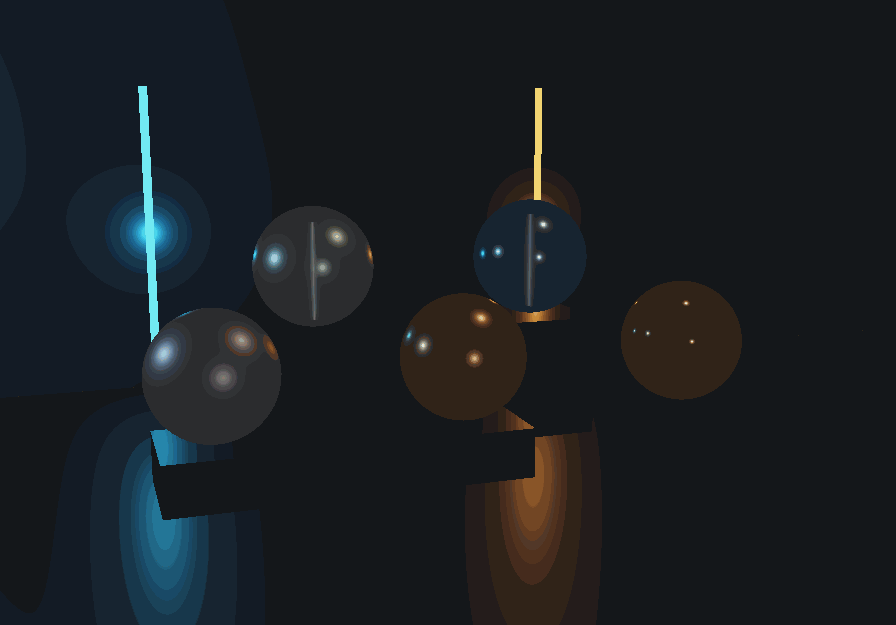
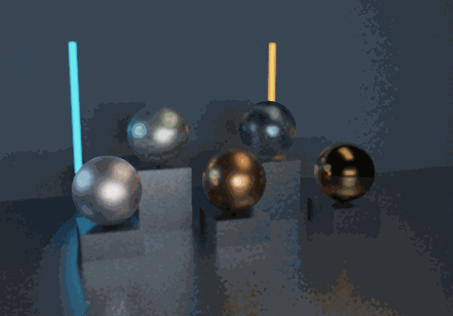
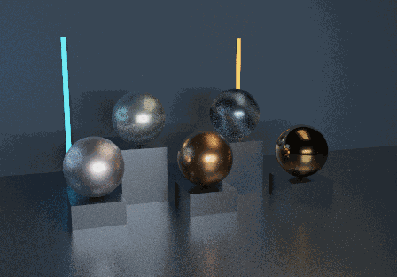
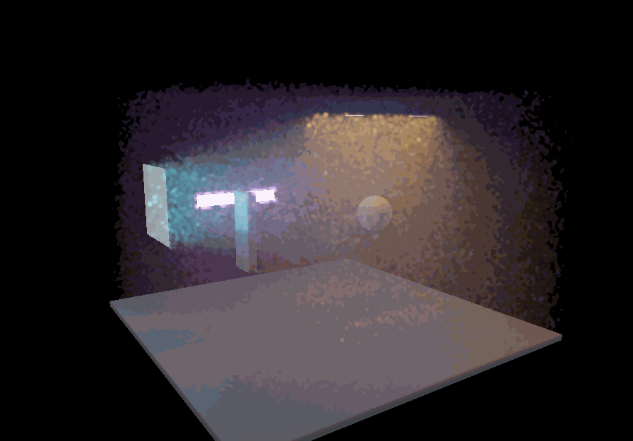
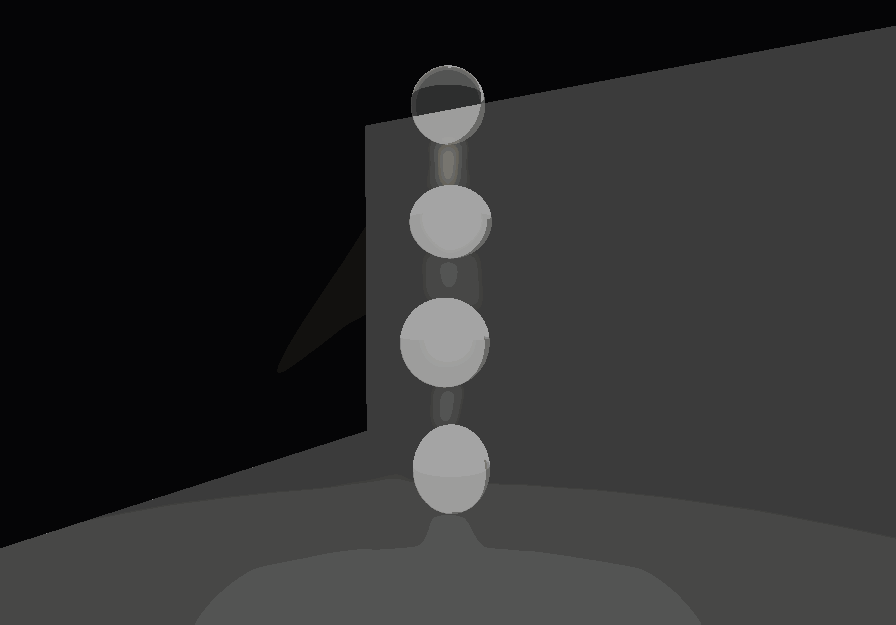

surface-legacy

896 × 625; 128 display frames. Synchronized render median: 1.36 ms.
Actual final display textures. No additional exposure, gamma or tone curve. Different native resolutions are retained. Timings synchronize the GPU for QA and are not ordinary interactive FPS.

896 × 625; 128 display frames. Synchronized render median: 1.36 ms.

896 × 625; 128 display frames. Synchronized render median: 3.45 ms.
Biased appearance preview | surface guide 448x312 / 127 spp

448 × 312; 128 display frames. Synchronized render median: 2.67 ms.

896 × 625; 128 display frames. Synchronized render median: 5.32 ms.
Biased appearance preview | surface guide 448x312 / 127 spp | PP 13: independent samples 306x213 / 127 passes

896 × 625; 128 display frames. Synchronized render median: 14.44 ms.
Biased appearance preview | surface guide 448x312 / 127 spp | PP 32: finite refracted-sheet raster preview 306x213 / 127 passes